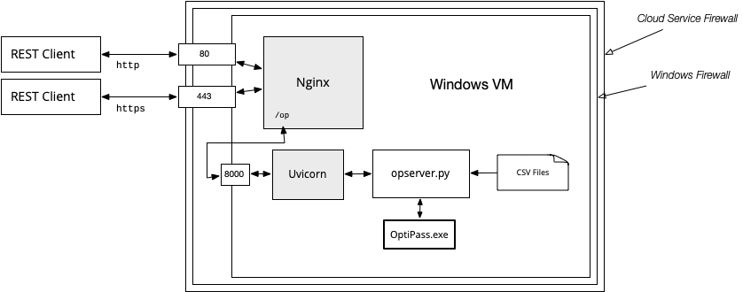

Installation and Configuration
Set Up a Windows Server
Since OptiPass is a Windows application it must be run from a Windows system. The easiest way to set up a new server is to create a Windows VM at Amazon Web Services or any cloud based hosting service.
The OptiPass Server is written entirely in Python. It uses a library named FastAPI to create a RESTful web service. When you start the program FastAPI will start up a web server (named Uvicorn) and have it listen for connections, by default using port 8000.
You could then open up that port on your system so the OptiPass Client (or any other application) could connect to your server. However, the simple web server that comes with FasstAPI is very rudimentary. Instead, the developers of FastAPI recommend installing an "industrial strength" server like Nginx or Apache and connecting to Uvicorn with a reverse proxy.

One of the advantages of Nginx or Apache is that they can handle encrypted connections using HTTPS.
Install the Python Modules
Install Python and Pip (the Package Installer for Python). You can use any version of Python later than 3.11.1.
The easiest way to install the server is to tell Pip to get the code from GitHub. Start a Powershell window, create a directory where you want to install the code, and then type this command from that directory:
> python -m pip install https://github.com/conery/op-server.git
As an alternative, clone the repo:
> gh repo clone conery/op-server
Then cd to the new repo and type this command (note the period at the end of the line):
> python -m pip install .
Install OptiPass
Make a new folder named bin in the repo.
Obtain a copy of .exe file for OptiPass from EcoTelligence LLC or another source.
Make sure it's the command line executable, not the GUI version.
It should be named OptiPassMain.exe.
Put this file in the bin folder.
Add Data Files to the static Directory
The server organizes data according to projects. Each project can have its own barrier data, restoration targets, and so on.
All of this data is located in the static folder in the repo.
Inside that folder are six subfolders:
./static
├── barriers
├── colnames
├── html
├── images
├── maps
└── targets
Inside these folders are further subfolders for the data for each project, where the name of the project matches the name of the subfolder.
For example, if a server has data for two projects, named demo and oregon the folders would look like this:
./static
├── barriers
│ ├── demo
│ └── oregon
├── colnames
│ ├── demo
│ └── oregon
...
The files for the demo project are useful starting points for creating your own project data. To add your own content, create a new folder in each area, based on the name of your project. Inside that folder add new CSV or HTML files, following the guidelines in this section.
barriers Directory
There should be two CSV files to describe the barriers in a project:
barriers/
├── demo
│ ├── barriers.csv
│ └── passability.csv
Both of these files should have one line for each barrier:
barriers.csvwill have the basic information about each barrier.passability.csvwill have the habitat, prepass, and postpass values for each target for each barrier.
barriers.csv
The names of the columns in barriers.csv should match the names shown in the table below.
| column name | description | note |
|---|---|---|
ID |
a unique ID, composed of letters and digits | |
region |
geographic region name, typically the name of a river | |
DSID |
ID of barrier immediately downstream | (1) |
name |
more descriptive barrier name (can be left blank) | |
cost |
cost to repair or replace the barrier | (2) |
X |
horizontal coordinate of the barrier on the project's map | (3) |
Y |
vertical coordinate of the barrier on the project's map | (3) |
NPROJ |
a 1 or a 0 to indicate whether or not to include the barrier | (4) |
comment |
an optional comment |
- Put "NA" in the DSID column if a barrier does not have a downstream neighbor. Otherwise the name in this column must match an ID in another row.
- The units in the cost column should be number of dollars. The OptiPass manual uses "thousands of dollars", e.g. it would put 100 in the table to mean $100,000, but in this data set use the full amount and write 100000 (without commas).
- The coordinate values depend on the type of map. For static maps use pixels, where (0,0) is the lower left. For tiled maps use latitude and longitude.
- Put a 0 in the
NPROJcolumn if a barrier cannot be repaired and should not be included in the set analyzed by OptiPass.
passability.csv
There should be one line in passability.csv for each line in barriers.csv.
The first column in this file should also be named ID, and the names in this column must match the names in barriers.csv.
Following the ID column there should be three columns for each target (four if targets use scaled habitat values). The names of the columns are arbitrary but should be based on target names (the names will be used in other tables and need to be recognizable).
For example, the two targets in the demo project are named T1 and T2, so natural names for the columns are HAB1, PRE1, and POST1 for the habitat, prepass, and postpass values of target T1, and HAB2, PRE2, and POST2 for the values of target T2.
Here are the first few lines of passability.csv for the demo project:
| ID | HAB1 | PRE1 | POST1 | HAB2 | PRE2 | POST2 |
|---|---|---|---|---|---|---|
| A | 2.1 | 0.4 | 1.0 | 1.68 | 0.6 | 1.0 |
| B | 0.9 | 0.0 | 1.0 | 0.72 | 0.0 | 1.0 |
| ... | ... | ... | ... | ... | ... | ... |
If a project has scaled habitat values include a fourth column for each target and give it an appropriate name. For example, if the demo project had scaled values, the extra columns might be called sHAB1 and sHAB2.
A passability.csv file can be made a bit smaller if two or more columns have the same values.
For example, the postpass columns in the demo project (POST1 and POST2) both have 1.0 for in every row, meaning that after repair all the gates are fully functional.
In that case, the table can be simplified by dropping one of the columns and renaming ther other one to POST (without a target number).
The only requirement is that every name that appears in a mapping file (colnames.csv, described below) has to appear as a column somewhere in the passability table.
colnames Directory
The structure of this directory depends on whether a project has more than one set of passability values for targets. This is what the directory looks like on a server that has two projects, one for the demo data and one for the Oregon coast:
colnames/
├── demo
│ └── colnames.csv
└── oregon
└── climate
├── current.csv
└── future.csv
The fact that there is only one file in the demo folder means there is only one way to associate target names with passability values, and it's in the file named colnames.csv.
The subdirectory under oregon means users will have a choice, named "climate" (using the name of the subdirectory), and can pick which set of passability values to use.
Regardless of how the directory is structured, all the CSV files have the same information.
There will be one row for each target, and the contents will be names of columns from the passability.csv file for the project.
Here is the file for the demo project:
| abbrev | habitat | prepass | postpass | unscaled |
|---|---|---|---|---|
| T1 | HAB1 | PRE1 | POST1 | HAB1 |
| T2 | HAB2 | PRE2 | POST2 | HAB2 |
The first row says the passability values for target T1 can be found in columns named HAB1, PRE1, and POST1 in the project's passability.csv file.
If a project uses scaled habitat values, put the name of the scaled habitat in the habitat column and the name of the original unscaled values in the unscaled column.
The demo project does not have scaled habitats, so the name in the unscaled column is just the same as the name in the habitat column.
html Directory
The html directory has static content the client will display in a GUI.
html
├── demo
│ ├── help.html
│ └── welcome.html
The Welcome tab in the GUI describes a project and gives the overall description of the workflow required to use OptiPass.
A Help tab has detailed instructions of how to use each "widget" to enter optimization parameters.
Each project can tailor the contents of these files to fit their data.
maps Directory
The maps directory tells a client how to draw the map for the project. This is the maps directory for the demo project:
maps
├── demo
│ ├── Riverlands.png
│ └── mapinfo.json
Every project needs a mapinfo.json file.
This is the file for the demo project:
{
"map_type": "StaticMap",
"map_file": "Riverlands.png",
"map_title": "The Riverlands",
"map_tools": ["hover"]
}
The map_type entry can be either StaticMap or TiledMap.
- A StaticMap is simply a PNG image. If a project has a StaticMap there must also be a
map_fileentry in the JSON file and a PNG file of that name should also be placed in themapsdirectory. - If the map type is TiledMap the client will connect to a tile server to draw the map. Map coordinates are taken from the barrier file, and the map that appears in the GUI will be big enough to include all barriers.
The map_title and map_tools entries are used by the client.
The tools are icons drawn at the bottom of the map that allow the user to interact with the map, e.g. to zoom in or move around.
The items that can appear in the map_tools list are:
hover, which will display the ID and other information about a barrier when the user moves their mouse over a barrier on the mapwheel_zoomallows the user to zoom in or outpanallows the user to move the map left/right or up/downresetis a button that restors a map to the original coordinates after panning or zooming
targets Directory
The targets directory for a project needs two files:
targets
├── demo
│ ├── layout.txt
│ └── targets.csv
The CSV file has entries that describe the restoration targets for the project. The file should have the following columns:
| column name | description |
|---|---|
abbrev |
a unique two-letter ID for the target |
long |
the full name of the target |
short |
a shorter name used in output tables |
label |
a name to use in plots, which should include units |
infra |
True if the target has multiple colname mappings |
Here are two examples from the Oregon Coast project (which has more interesting targets than the demo data):
| abbrev | long | short | label | infra |
|---|---|---|---|---|
| CO | Coho Streams | Coho | Habitat Potential (miles) | False |
| AG | Agriculture | Agric | Farmland Potentially Protected (acres) | True |
The layout file is used by the client to display the GUI elements that let users select targets. As an example, the Oregon project has ten targets, six for fish species and four for infrastructure. If we want the GUI to arrange them in two columns, with fish targets (which have names CO, CH, ST, ...) in the left column and infrastructure targets (named AG, RR, BL, ...) on the right, the layout file simply lists the names in the order they should be displayed:
CO AG
CH RR
ST BL
...